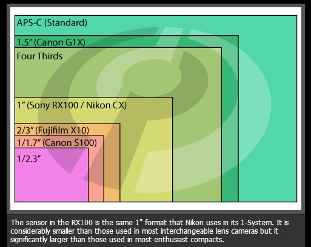
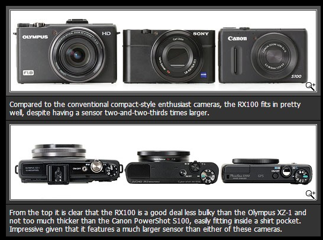
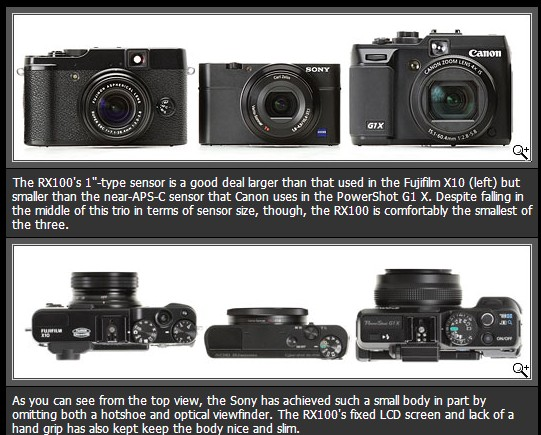

你真的需要单反吗？《数码时代旅游摄影快速指南》相机购买指南2013夏季版
2013年6月22日
最近很多朋友咨询买相机的问题。我一般会问：花多少钱？主要拍什么？一般答案都是家用拍小孩兼旅游用，这些朋友多是从手机和口袋机准备升级的，我在这里集中回答一下。
第一个问题：你真的需要单反或微单吗？器材购买第一经验是：相机的体积重量与使用次数成反比，越轻越小的机子用得越多。我现在用得最多的摄影器材是手机。拍照首先考虑升级你的手机，然后再考虑相机。相机升级的首选不是单反也不是单电，而是
专业卡片机。最后考虑单电（微单），万不得已才考虑单反。
第二个问题，如何买。我一般淘宝买，找评论最多的几家。如果你觉得淘宝不靠谱，就去几家大电商如易讯、京东、新蛋、苏宁、国美或亚马逊，谁便宜买谁的。
第三个问题，关于附件。相机一般我只买官方标配，存储卡和电池另外买。存储卡不要贪便宜，去天猫买正品比较靠谱。电池国产的备用即可。滤色镜方面按惯例偏振镜必买。UV镜我从来不用，我只用遮光罩。摄影包我从来不用，普通斜挎包即可，最多
加个内胆包，十块钱一个。三脚架买个可以反折的旅游系列国产架子即可，有钱买碳素的，否则铝镁合金的也不错。
下面说说各种相机。
手机拍照首选诺基亚Nokia808。这个奇葩是目前地球上最佳拍照手机，没有之一，其他任何手机包括iphone5都在它后面吃灰。此机在28mm焦段分辨率打垮绝大多数单反以及所有单电，再加上它的高清录像，尤其是录音效果绝佳（接近CD），还能打电话发微博，这才是旅游上上之选。参见我的评测：个人点评诺基亚808手机拍照。
2013年6月中旬三星推出了一款奇葩手机，galaxy Zoom
S4，拥有十倍光学变焦镜头（24-240mm），安卓4.2系统，双核处理器，是手机和卡片相机的综合体。此机比较坑爹的是屏幕只有960x540分辨率，还不如我半年前买的galaxy
camera（21倍光学变焦，1280X720屏幕，但不能打电话）。
诺基亚808的塞班系统已经作古，它的640x360分辨率的屏幕也比较坑爹，所以除了狂热的手机拍照爱好者，一般人不会买它。至于别的手机，iphone5我不熟悉，安卓系统天天出新机，月月有机皇，我就更不熟悉了。应该说，排除极少数奇葩，现在1000元以上的国产手机以及1500元以上国外主流品牌手机拍照都能接受。
下面说说口袋机或称卡片机。度假一般不考虑大机器，我是来休闲的，不是来扛包的。几百元的口袋机我就不说了，随便买都行。如果是海边度假，可以考虑三防机。各大品牌都有三防潜水机。
专业口袋机首选SONY的RX100，可以放进牛仔裤口袋里，具有一英寸的巨大感光芯片，较好的画质和28-100mm常用焦段
，实乃旅游首选。RX100就是价钱太贵了点，目前3500元左右，比很多入门单电套装还贵。
谈到旅游方便和感光芯片巨大，佳能还有一个奇葩G1X，28-112mm焦段是旅游最适合的。我之所以说G1X是奇葩是因为其感光芯片十分巨大，比松下和奥林巴斯的微单还大，接近普通单反（参见下面的感光芯片大小比较图，courtesy
of dpreview
）。这么大芯片意味着画质优秀。但这台机器大得像半块砖头，塞不进牛仔裤口袋，顶多放进大衣口袋。我没法接受这么大的口袋机。如果你可以接受G1X的体积，那入门级微单加上饼干变焦（松下14-42mm）之类，应该也可以接受，价钱差不多，还可以换镜头。

以下是dpreview的截图，大家可以看看SONY的RX100、佳能的S100以及Olympus的XZ1在体积上的对比：

以下是dpreview截图的RX100与富士fujifilm
X10以及佳能G1X的体积对比，和GX100比起来，佳能的G1X简直就是一砖头：

我极力不推荐单反，因为单反太大，不方便携带，这是致命的。入门级单反虽然相对轻便，但经常跑焦，对焦都不准那还拍啥个啥？中高档单反又贵又重，家用或旅游用完全没有必要。话说回来，具有对焦微调功能的单反还是可以买的，如果你不嫌弃那体积和重量。
一般我都推荐单电（或称微单），单电绝对不跑焦。品牌和型号方面，买最便宜的都行，一般套机都在两千多元左右，性价比较高的有索尼3n，松下GX1，以及三星NX1000套机，我尤其喜欢古老的松下GF2（套机只要1700元，便宜到笑），但此机接近停产，要注意翻新货。
佳能的M单电也很便宜，套机2800元。但佳能的单电镜头没有成系列，截止目前只有两个镜头（22mm定焦和18-55标准变焦），这是个问题。
尼康的J1和V1 感光芯片面积太小，是个坑爹货。更坑爹的还有宾得Q系列单电，那基本就是个玩具。
如果你肯多出一千多元，目前我推荐索尼的5R，奥林巴斯的EPL5。镜头方面不要着急，先买套机。玩几个月觉得镜头不够用了再考虑升级。旅游拍照，90%的情况下18-55套机镜头都够用了。
如果你志存高远或者钱烧包，那就买各品牌的顶级单电比如索尼NEX7，奥林巴斯EM5，富士Xpro1或者XE1，三星GX20或者松下GH3。NEX7是我目前的主力机，但据说替代的新型号就快出来了，建议稍等。奥林巴斯EM5套机非常不错
（OMD），特色是初级防水，如果你嫌大，还可以买小一号的EP5。富士Xpro1和XE1外形复古，是文艺青年装逼利器。三星GX20有翻转屏和wifi，价钱相对便宜。松下的GH3视频极强，号称本星球三万元之内视频第一强机。
这几年来相机市场已经彻底乱了。以前可以换镜头的就是高级相机，比如单反；但去年宾得出品的Q系列可换镜头相机是个彻底的玩具。不可换镜头的天价单电也越来越多，索尼的RX1是其中的王者，这是一台35mm定焦的全画幅单电，蔡司镜头的光学素质极好，再加上全画幅感光芯片，高感光度（ISO1600以上）画质好得吓人。RX1只有两个缺点，一是价钱太贵，售价17000元，一般人负担不起；二是没有取景器，设计失误。
不可换镜头的单电奇葩迭出，
最近理光的GR以及尼康的coolpix A这两台28mm定焦的APS画幅机器都大放异彩，只可惜售价六千多有点贵，一般旅游定焦也不太合适。定焦单电奇最葩的当属适马DPM系列（有三个型号，28mm镜头的DP1M，45mm的DP2M，75mm镜头的DP3M）。这三个机器使用独门X3感光芯片，画质和解像度吓死人，能灭大多数单反。但这三个机器操作感觉
较差，也极其耗电，随身要带四块电池，就不推荐一般人使用了。
这个文章就到此为止。貌似我还没有说到单反？是的，我已经卖掉了所有的单反，投奔单电/微单阵线，单反就不多说了。鄙人预测，假以时日，单反会慢慢成为弱势群体，主流将是微单的世界。
杨飞，
2013年6月22日，长沙
参考阅读：
《数码时代旅游摄影快速指南》相机购买指南2012版
《数码时代旅游摄影快速指南》原版
个人点评诺基亚808手机拍照